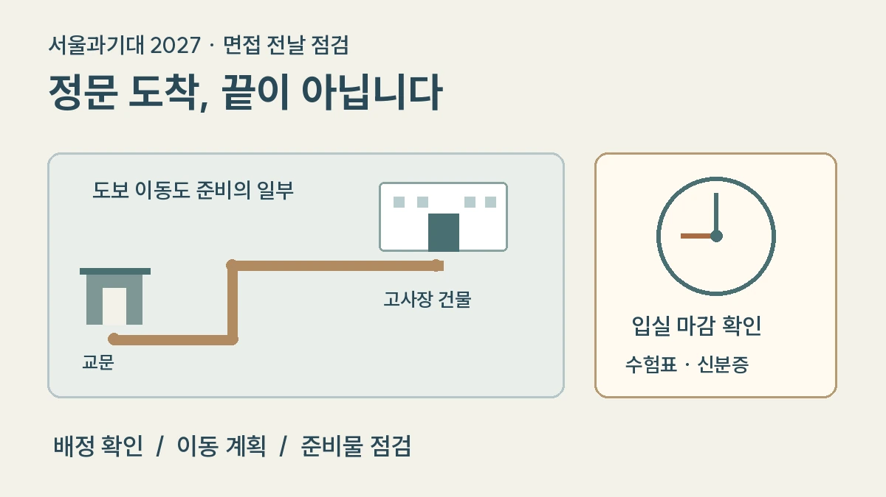

서울과기대 2027 면접, 정문 도착 시각과 입실 마감을 혼동하고 있나요?
11월 28~29일 면접을 앞두고 입실 마감·교내 도보 이동·고사용 수험표를 한 장의 실행표로 정리합니다. 특수교육대상자의 별도 입실 구간, 학생증 인정 조건의 문서 차이, 11월 26일 추가 안내도 확인했습니다.
면접 시작 시각에 맞춰 대학 정문에 도착하는 계획은 위험합니다. 서울과기대는 2027학년도 수시 학생부종합전형 면접에서 정해진 입실시간 이외에는 입실할 수 없다고 안내합니다. 오전 일반 배정자는 07:30~08:30, 오후 배정자는 13:30~14:00가 입실 가능 구간입니다. 자신의 차례가 늦을 것이라는 예상으로 마감을 넘겨서는 안 됩니다.[4]

1. 11월 26일 게시 공지와 11월 25일자 첨부를 구분합니다
이 글의 확인일은 2026년 11월 27일입니다. 입학처는 2026년 11월 26일 16:10 ‘수시 면접고사 추가 유의사항’을 게시했습니다. 그 공지에 연결된 첨부 PDF 자체의 작성일은 11월 25일입니다. 게시일과 문서 작성일이 다르며, 오늘 새로 발표된 모집요강 개편으로 해석한 것이 아닙니다.[1][6]
현재 모집요강 메뉴의 PDF, 8월 28일 응시일시 공지, 11월 19일 게시된 1단계 합격자 발표 공지, 위 추가 안내를 함께 확인했습니다. 1단계 합격자 공지의 게시일은 11월 19일이지만, 공지 본문에 적힌 발표 시각은 11월 20일 금요일 14:00입니다. 공지 등록 시각을 합격 발표 시각으로 바꾸어 읽지 마세요.[3][4][5]
기존 논술·면접장 보안 점검 해설이 전자기기와 부정행위 안내를 구분해 읽는 글이라면, 이번 글은 서울과기대 응시자가 입실 마감·교내 이동·고사용 수험표를 한 장의 실행표로 연결하는 것이 목적입니다. 모든 대학에 적용되는 입실 규칙을 설명하는 글은 아닙니다.
2. 같은 서울과기대라도 전형과 배정 구간이 먼저입니다
- 2026년 11월 28일 토요일: 학교생활우수자·창의융합인재·특수교육대상자전형의 면접일입니다.[3]
- 2026년 11월 29일 일요일: 국가보훈대상자·기회균등·농어촌학생·평생학습자·군위탁전형의 면접일입니다.[3]
- 개인의 오전·오후와 건물: 모집단위 이름만 보고 추정하지 말고, 입학처 1단계 합격자 공지에서 연결되는 조회 화면의 고사용 수험표로 확인해야 합니다. 안내된 응시 일정은 조정할 수 없습니다.[4]
- 특수교육대상자는 별도 구간 확인: 1단계 합격자 공지는 오전A 07:30~08:30, 오전B 10:30~11:00, 오후 13:30~14:00를 안내합니다. 일반 오전 마감만 보고 본인의 배정을 대체하지 마세요.[4]
군위탁전형은 모집요강에서 일괄합산, 지원자 전원 면접 대상으로 구분합니다. 다른 학생부종합전형의 ‘1단계 합격자’ 설명을 그대로 적용하지 말고, 본인 전형의 고사장 발표와 입실 정보를 확인해야 합니다. 모집요강 인쇄 47~48·59쪽(PDF 51~52·63쪽)에서 확인할 수 있습니다.[5]
3. 정문 도착이 아니라 고사장 건물 입실 완료를 역산하세요
추가 안내 PDF 1쪽은 고사 시작 30분 전까지 입실을 완료하고, 입실시간 종료 후에는 고사건물 출입이 불가능하다고 명시합니다. 교통정체로 시간을 지키지 못해도 입실과 응시가 불가능하며 결시 처리된다는 안내입니다. ‘아직 면접이 시작하지 않았을 것’이라는 추측은 입실 허가 근거가 아닙니다.[6]
같은 안내는 고사 당일 외부 차량 진출입을 전면 금지하고 정문·창의문·서문의 차량 통제를 알립니다. 교내 이동은 도보이며, 경로에 따라 정문에서 고사장까지 약 20분, 창의문에서 약 25분이 걸릴 수 있다고 설명합니다. 이는 대학의 참고 소요시간이지, 모든 건물·보행 조건에 대한 보장 시간이 아닙니다.[6]
편집팀의 계획 예시: 오전 일반 배정자가 고사용 수험표에서 08:30 마감을 확인했다면, ‘08:20에 정문에 도착하겠다’가 아니라 ‘건물 위치·도보 이동·본인 확인과 예상치 못한 지연까지 고려해 마감 전에 입실을 끝내겠다’로 계획을 고칩니다. 실제 출발 시각은 집에서의 이동 조건에 맞춰 정하세요. 이 글은 특정 교통편이나 도착 시각을 보장하지 않습니다.
4. 수험표·신분증·휴대품은 서로 다른 확인 항목입니다
추가 안내 PDF 3쪽은 입학처 공지의 ‘고사장 발표’ 결과 화면에서 고사용 수험표를 출력하도록 안내합니다. 1단계 합격자 공지도 이 수험표에 고사실 정보와 입실시간이 포함된다고 설명합니다. 원서접수 때 보관한 접수증만 보고 준비가 끝났다고 판단하지 마세요.[6][4]
학생증 인정 조건은 특히 다시 읽어야 합니다. 현재 모집요강 인쇄 23쪽(PDF 27쪽)은 2026년 12월~2027년 2월 졸업예정자, 생년월일·사진 포함 조건을 적고 있습니다. 반면 이번 추가 안내 PDF 1쪽은 학생증을 2027년 1~2월 고등학교 졸업예정자에 한해 인정한다고 씁니다. 문서 간 졸업월 표현이 다르므로, 12월 졸업예정자처럼 경계에 걸리면 종전 표현만 믿지 말고 입학처에 확인하거나 안내에 명시된 다른 규정 신분증을 준비하세요.[5][6]
추가 안내에는 유효기간 내 주민등록증·발급신청 확인서, 여권·운전면허증·청소년증·발급신청 확인서 등이 제시됩니다. 휴대폰에 저장한 신분증 사진은 인정하지 않지만, 모바일 주민등록증·운전면허증은 인정하며 확인 후 전원을 끄도록 안내합니다. 사진 파일과 정식 모바일 신분증을 같은 것으로 취급하지 않습니다.[6]
휴대폰 등 휴대금지 물품은 전원을 끄고 대학이 제공하는 개인별 보관 봉투에 넣어 감독위원 안내에 따라 제출하는 절차입니다. 스마트 안경·스마트 링 등 반입금지 물품은 별도로 구분됩니다. 따라서 ‘휴대폰을 대학에 가져오기만 해도 무조건 부정행위’라고 바꾸어 말할 수는 없습니다. 수거 이후 소지·착용 확인, 점검 협조, 복장과 액세서리 관련 내용은 추가 안내 PDF 1~3쪽을 직접 읽으세요.[6]
5. 교육용 가상 사례: 전날 계획을 실행표로 고치기
아래는 편집팀이 만든 교육용 가상 사례이며 실제 수험생의 경험담이 아닙니다. 오전 일반 배정이라는 가정에서 계획의 빈칸을 점검합니다. 대학의 평가 문항이나 모범답안, 가산점 기준이 아닙니다.
수정 전 “토요일 오전 면접이니까 아침에 정문에 도착하면 된다. 접수할 때 출력한 종이와 휴대폰 속 학생증 사진을 가져가고, 차례를 기다리며 AI로 새 답변을 만들겠다.”
이 계획은 전형·개별 배정·건물 입실 마감을 확인하지 않았고, 고사용 수험표와 규정 신분증도 구분하지 않았습니다. 대기 중 전자기기를 자유롭게 쓸 수 있다는 전제도 공식 수거 안내와 맞지 않습니다.[4][6]
수정 후 “입학처 공지의 조회 링크에서 제 전형·날짜·입실 구간·건물과 호실을 확인해 고사용 수험표를 출력한다. 이번 추가 안내의 인정 범위에 맞는 신분증을 준비한다. 교내 도보 구간을 포함해 입실 완료 시각을 계획하고, 휴대품은 감독위원 수거 안내에 따른다. 마지막 복기는 이미 수행한 탐구의 질문·내 역할·배운 점을 종이 메모로 정리하되, 현장 자료 이용 범위는 감독위원 지시를 따른다.”
다음 ‘면접 전날 실행 메모’를 본인 정보로 채워 보세요. 개인 수험번호·호실·신분증 사진을 공개 댓글이나 온라인 공유 문서에 올릴 필요는 없습니다.
- 지원 전형 / 실제 면접일 / 본인 배정 구간: ______
- 고사용 수험표의 건물·호실 / 입실 시작·마감: ______
- 교내 도보 이동을 포함한 출발 계획 / 지연에 대비할 여유: ______
- 고사용 수험표 출력 / 규정 신분증 / 수거·복장 안내 확인: ______
- 실제 학생부 활동 한 건의 질문 / 내가 한 일 / 배운 점과 한계: ______
6. 마지막 탐구 복기는 ‘새 성과’가 아니라 실제 기록으로 합니다
현재 모집요강 인쇄 58~59쪽(PDF 62~63쪽)은 학생부종합 면접을 제출서류에 기초한 개별면접으로 안내합니다. 면접의 학업역량 항목에는 학업태도·탐구력·문제파악 능력, 진로역량에는 관련 지식을 설명하거나 토의할 수 있는 능력 등이 제시됩니다. 탐구보고서 자체를 별도 제출하라는 뜻이나 AI 탐구를 반드시 해야 한다는 조건은 아닙니다.[5]
편집팀의 마지막 복기 제안: 학생부에 실제로 남은 활동 한 건을 골라 ‘무엇이 궁금했나 → 무엇을 직접 했나 → 어떤 근거로 생각이 바뀌었나’를 자신의 말로 설명하세요. 모르는 내용은 준비 과정에서 확인하되, 하지 않은 분석이나 팀원의 역할을 자기 경험으로 추가하지 않습니다. 화살표는 연습 순서일 뿐 대학의 공식 답변 구조가 아닙니다.
내용 연습은 서류 기반 면접 준비 가이드와 꼬리질문 점검 가이드를 이어 보세요. 탐구 방법의 선택 이유가 막히면 부산대 사례의 선택 이유 메모를 연습 도구로 참고할 수 있지만, 부산대의 평가·일정 규칙을 서울과기대에 적용하지는 마세요.
7. 아직 확인하지 못한 것과 다음 확인 시점
편집팀은 공개 공지와 첨부를 확인했지만, 지원자 개인별 로그인 조회 화면의 실제 배정과 고사용 수험표 내용은 확인하지 않았습니다. 공개 자료만으로 개인의 날짜·오전B 해당 여부·건물·호실을 대신 확정할 수 없습니다. 응시 전날과 출발 전 입학처 공지 및 본인 고사용 수험표를 다시 확인하세요. 개별 일정 변경을 허용한다고 임의로 해석하지 않습니다.[4][6]
추가 안내는 면접 결시자를 불합격 처리하며 고사료를 반환하지 않는다고 안내합니다. 이번 글은 2027학년도, 2026년 11월 28~29일 서울과기대 면접을 위한 공개자료 기반 해설입니다. 2028학년도 개편이나 다른 대학의 준비물·제재 규정으로 일반화하지 않습니다. 별도의 사람 검토나 대학 감수는 거치지 않았으며 합격·득점은 보장하지 않습니다.[6][3]
공식 출처
모집요강은 인쇄 쪽수와 PDF 쪽수를 함께 표기했습니다. 추가 유의사항 첨부는 3쪽이며 별도 인쇄 쪽수 없이 PDF 쪽수를 사용했습니다. 공지 페이지에서 첨부를 다시 내려받아 확인할 수 있습니다.
- [1] 서울과기대 2027 수시 면접고사 추가 유의사항 (2026.11.26)
- [3] 서울과기대 2027 학종 면접 응시일시 안내 (2026.08.28)
- [4] 서울과기대 2027 학종 1단계 합격자 발표 (2026.11.19)
- [5] 서울과기대 현재 수시 모집요강 PDF
- [6] 서울과기대 11월26일 추가 유의사항 첨부 PDF
이 칼럼은 운영자의 관점과 일반 교육 정보를 담고 있으며 특정 대학 합격이나 평가 결과를 보장하지 않습니다.
함께 볼 글
학생부 기반 면접 준비: 영역별 활동 복기와 꼬리질문·STAR·PREPNEW
세특·창체·공동체 활동을 동기·과정·결과·성찰로 정리하고 실제 기여와 한계를 설명하는 서류 기반 면접 연습법입니다.
학생부 기반 대입 면접 꼬리질문 점검표: 주장·근거·한계 연결하기NEW
보고서의 핵심 주장에 조건과 반대 질문을 붙여, 근거를 찾을 수 있는 답변과 아직 확인하지 못한 답변을 구분합니다.